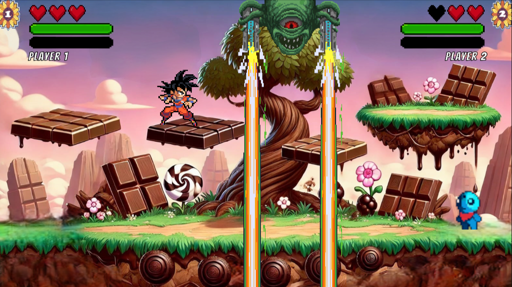

Estudiante de ingeniería en software de la Escuela Politécnica Nacional, Quito - Ecuador.
Knockout Game
mayo - septiembre 2025

Descripción
Knockout es un juego de peleas en 2D, donde los jugadores se enfrentan en combates 1vs1 en diversos escenarios.
Fue desarrollado como parte de la materia de Ingeniería en Software y Requerimientos. El juego está creado en Unity y programado en C#.
FITEC es un sistema de gestión para una red de gimnasios en Quito; implementa una base de datos distribuida para clientes, instructores y suscripciones.